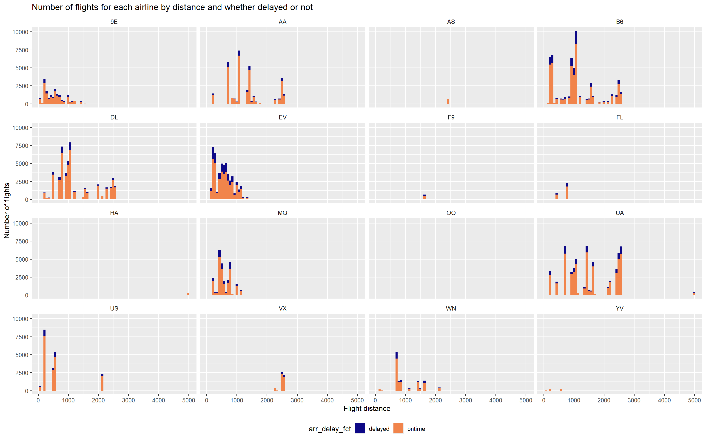
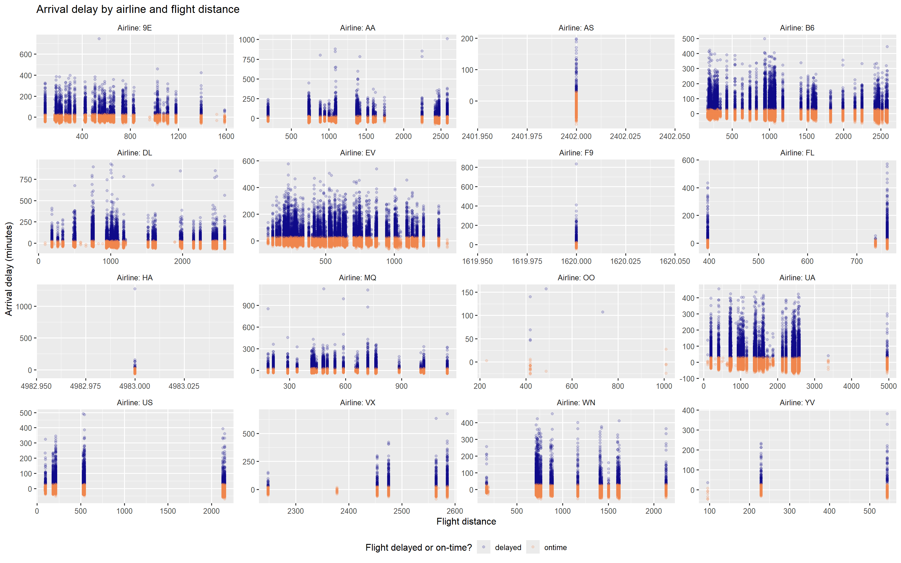
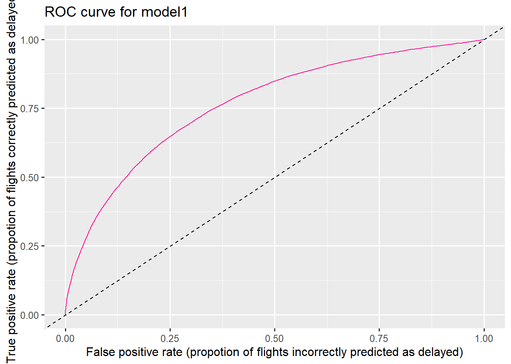

Code
library(here)
library(readr)
library(dplyr)
library(lubridate)
library(ggplot2)
library(tidymodels)
library(nycflights13)library(here)
library(readr)
library(dplyr)
library(lubridate)
library(ggplot2)
library(tidymodels)
library(nycflights13)theme_set(theme_gray(base_size = 12)) +
theme_update(
legend.position = "bottom",
strip.background = element_blank(),
)dat <- flights |>
filter(!is.na(arr_delay)) |>
mutate(flight_date = as_date(time_hour),
arr_delay_fct = factor(if_else(arr_delay >= 30, "delayed", "ontime"))) |>
#inner_join(weather, by=c("origin", "time_hour")) |>
select(dep_time, flight, origin, dest, air_time, distance,
carrier, flight_date, arr_delay, arr_delay_fct, time_hour) |>
mutate_if(is.character, as.factor)What proportion of flights is delayed?
dat |>
count(arr_delay_fct) |>
mutate(proportion_of_flights = n / sum(n))# A tibble: 2 × 3
arr_delay_fct n proportion_of_flights
<fct> <int> <dbl>
1 delayed 52802 0.161
2 ontime 274544 0.839Understanding interactions between ariline, flight destinations, and flight distance
sort(table(dat$dest), decreasing = TRUE)
ATL ORD LAX BOS MCO CLT SFO FLL MIA DCA DTW DFW RDU
16837 16566 16026 15022 13967 13674 13173 11897 11593 9111 9031 8388 7770
TPA DEN IAH MSP PBI BNA LAS SJU IAD PHX BUF CLE STL
7390 7169 7085 6929 6487 6084 5952 5773 5383 4606 4570 4394 4142
MDW SEA CVG MSY RSW CMH CHS PIT MKE SAN JAX BTV SLC
4025 3885 3725 3715 3502 3326 2759 2746 2709 2709 2623 2510 2451
AUS ROC RIC PWM HOU IND MCI SYR BWI MEM PHL GSO ORF
2411 2358 2346 2288 2083 1981 1885 1707 1687 1686 1541 1492 1434
DAY PDX SRQ SDF XNA MHT BQN CAK OMA SNA GSP SAV GRR
1399 1342 1201 1104 992 932 888 842 817 812 790 749 728
HNL LGB SAT TYS MSN DSM STT ALB BDL BUR BGR PSE PVD
701 661 659 578 556 523 518 418 412 370 358 358 358
SJC OKC OAK TUL SMF BHM ACK AVL ABQ MVY EGE CRW ILM
328 315 309 294 282 269 264 261 254 210 207 134 107
CAE TVC MYR CHO BZN JAC PSP EYW HDN MTJ SBN ANC LEX
106 95 58 46 35 21 18 17 14 14 10 8 1 sort(table(dat$carrier), decreasing = TRUE)
UA B6 EV DL AA MQ US 9E WN VX FL AS F9
57782 54049 51108 47658 31947 25037 19831 17294 12044 5116 3175 709 681
YV HA OO
544 342 29 The graph below shows that, perhaps unsuprisingly, there is a relationship between airline and flight distance…
dat |>
ggplot() +
geom_histogram(aes(x=distance, fill=arr_delay_fct), bins=70) +
facet_wrap(~carrier) +
scale_fill_viridis_d(option = "plasma", end=0.7) +
labs(x="Flight distance",
y="Number of flights",
color="Flight delayed or on-time?",
title="Number of flights for each airline by distance and whether delayed or not")
… but flight distance itself is not a good predictor for delay, albeit it appears that longer-distance flights might be less likely delayed:
dat |>
ggplot() +
geom_point(aes(x=distance, y=arr_delay, color=arr_delay_fct), alpha=0.2) +
facet_wrap(~paste("Airline:", carrier), scales="free") +
scale_color_viridis_d(option = "plasma", end=0.7) +
labs(x="Flight distance",
y="Arrival delay (minutes)",
color="Flight delayed or on-time?",
title="Arrival delay by airline and flight distance")
set.seed(123)
dat_split <- initial_split(select(dat, -arr_delay), prop=3/4)
dat_train <- training(dat_split)
dat_test <- testing(dat_split)dat_recipe <- recipe(arr_delay_fct ~ ., data=dat_train) |>
update_role(flight, time_hour, new_role="identity") |>
step_date(flight_date, features = c("dow", "month")) |>
step_holiday(flight_date,
holidays = timeDate::listHolidays("US"),
keep_original_cols = FALSE) |>
step_dummy(all_nominal_predictors()) |> # create dummy numerical variables out of factor columns
step_zv(all_predictors()) # remove predictors with zero variation, i.e. single-valued columns
print(dat_recipe)── Recipe ──────────────────────────────────────────────────────────────────────── Inputs Number of variables by roleoutcome: 1
predictor: 7
identity: 2── Operations • Date features from: flight_date• Holiday features from: flight_date• Dummy variables from: all_nominal_predictors()• Zero variance filter on: all_predictors()model1 <- logistic_reg() |>
set_engine("glm")
fitting_workflow1 <- workflow() |>
add_model(model1) |>
add_recipe(dat_recipe)
print(fitting_workflow1)══ Workflow ════════════════════════════════════════════════════════════════════
Preprocessor: Recipe
Model: logistic_reg()
── Preprocessor ────────────────────────────────────────────────────────────────
4 Recipe Steps
• step_date()
• step_holiday()
• step_dummy()
• step_zv()
── Model ───────────────────────────────────────────────────────────────────────
Logistic Regression Model Specification (classification)
Computational engine: glm Apply the model workflow on training data:
fitted_model1 <- fitting_workflow1 |>
fit(dat_train)fitted_model1 |>
extract_recipe()── Recipe ──────────────────────────────────────────────────────────────────────── Inputs Number of variables by roleoutcome: 1
predictor: 7
identity: 2── Training information Training data contained 245509 data points and no incomplete rows.── Operations • Date features from: flight_date | Trained• Holiday features from: flight_date | Trained• Dummy variables from: origin, dest, carrier, ... | Trained• Zero variance filter removed: flight_date_USJuneteenthNationalIndependenceDay
and dest_LEX | Trainedfitted_model1 |>
extract_fit_engine() |>
tidy()# A tibble: 157 × 5
term estimate std.error statistic p.value
<chr> <dbl> <dbl> <dbl> <dbl>
1 (Intercept) 2.70 2.73 0.990 3.22e- 1
2 dep_time -0.00165 0.0000140 -118. 0
3 air_time -0.0437 0.000561 -77.9 0
4 distance 0.00745 0.00150 4.95 7.40e- 7
5 flight_date_USChristmasDay 1.39 0.184 7.55 4.29e-14
6 flight_date_USColumbusDay 0.893 0.189 4.73 2.21e- 6
7 flight_date_USCPulaskisBirthday 0.886 0.144 6.15 7.74e-10
8 flight_date_USDecorationMemorialDay 0.704 0.127 5.56 2.74e- 8
9 flight_date_USElectionDay 0.931 0.187 4.97 6.71e- 7
10 flight_date_USGoodFriday 1.19 0.162 7.36 1.82e-13
# ℹ 147 more rowsRun the fitted model on test data, and evaluate performance:
dat_test_with_predictions <- augment(fitted_model1, dat_test)glimpse(dat_test_with_predictions)Rows: 81,837
Columns: 13
$ .pred_class <fct> ontime, ontime, ontime, ontime, ontime, ontime, ontime, …
$ .pred_delayed <dbl> 0.045864116, 0.078254003, 0.033174228, 0.020197414, 0.02…
$ .pred_ontime <dbl> 0.9541359, 0.9217460, 0.9668258, 0.9798026, 0.9774648, 0…
$ dep_time <int> 533, 554, 558, 607, 615, 628, 629, 632, 637, 653, 656, 6…
$ flight <int> 1714, 1696, 1124, 1077, 575, 413, 4646, 4144, 389, 1383,…
$ origin <fct> LGA, EWR, EWR, EWR, EWR, JFK, LGA, EWR, LGA, LGA, JFK, L…
$ dest <fct> IAH, ORD, SFO, MIA, ATL, SJU, BWI, IAD, MCO, PBI, MCO, M…
$ air_time <dbl> 227, 150, 361, 157, 120, 192, 40, 52, 144, 149, 142, 159…
$ distance <dbl> 1416, 719, 2565, 1085, 746, 1598, 185, 212, 950, 1035, 9…
$ carrier <fct> UA, UA, UA, UA, DL, AA, WN, EV, B6, DL, AA, AA, DL, UA, …
$ flight_date <date> 2013-01-01, 2013-01-01, 2013-01-01, 2013-01-01, 2013-01…
$ arr_delay_fct <fct> ontime, ontime, ontime, ontime, ontime, ontime, ontime, …
$ time_hour <dttm> 2013-01-01 05:00:00, 2013-01-01 05:00:00, 2013-01-01 06…dat_test_with_predictions |> roc_auc(truth=arr_delay_fct, .pred_delayed)# A tibble: 1 × 3
.metric .estimator .estimate
<chr> <chr> <dbl>
1 roc_auc binary 0.766dat_test_with_predictions |>
roc_curve(truth=arr_delay_fct, .pred_delayed) |>
ggplot() +
geom_path(aes(x=1-specificity, y=sensitivity), color="deeppink") +
geom_abline(slope=1, intercept=0, color="black", linetype=2) +
labs(x="False positive rate (propotion of flights incorrectly predicted as delayed)",
y="True positive rate (propotion of flights correctly predicted as delayed)",
title="ROC curve for model1")